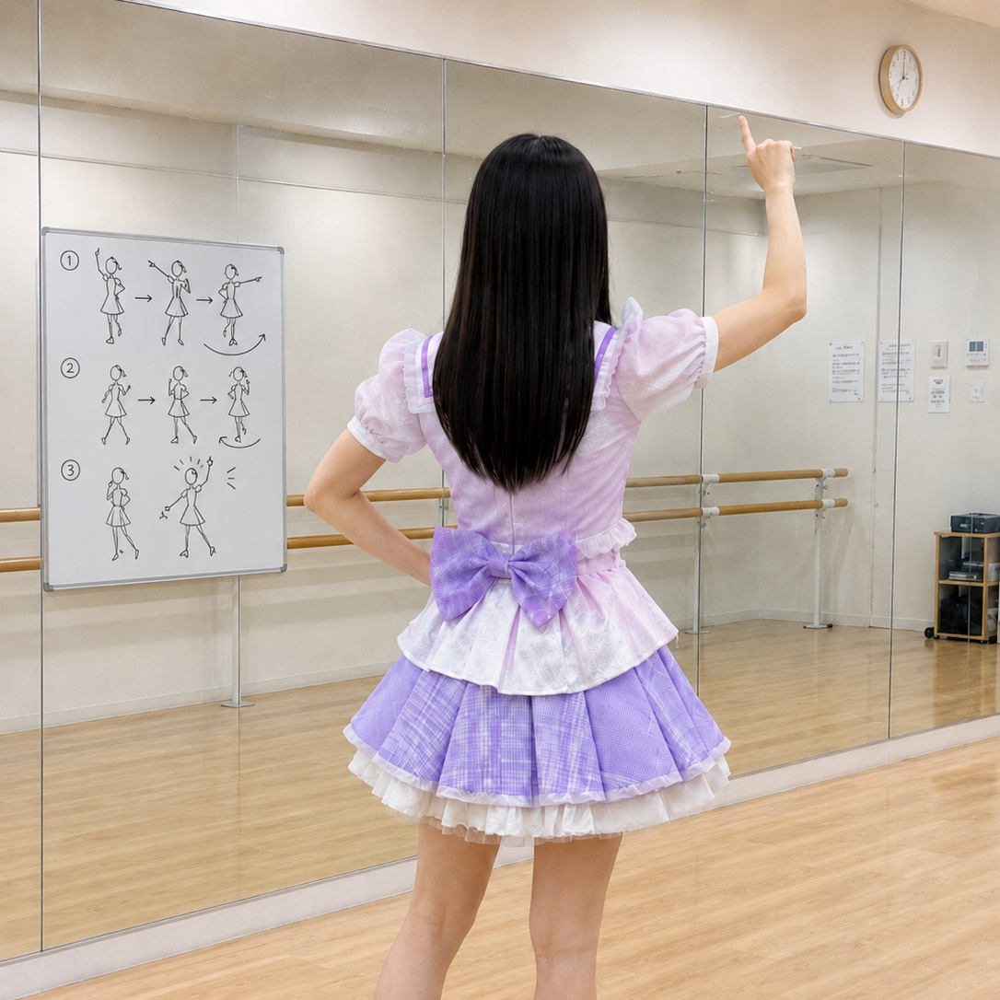
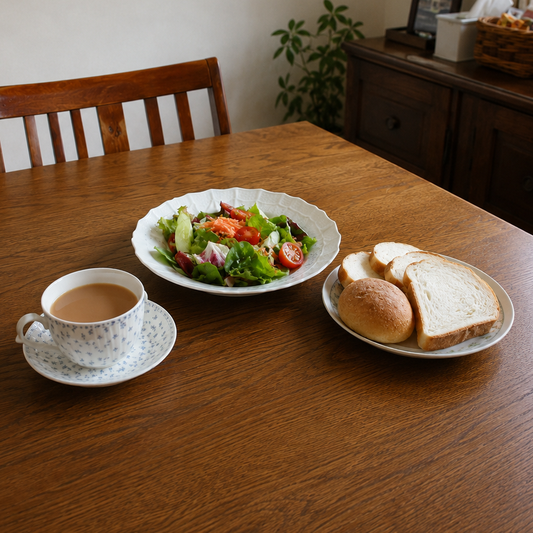

☆ 今日からブログ始めます！
はじめまして！星見河（ほしみかわ）りんなです🌟
今日からブログを始めることにしました！アイドルとして活動していく中で、みんなともっと近くなりたくて。
日々の練習のこととか、好きな食べ物とか、いろいろ書いていくつもりだよ♪
これからよろしくお願いします！がんばって更新するね！！(っ´∀｀)っ
りんな☆
☆ こんにちわんこそば

今日も朝からレッスンでした！歌もダンスも全力でやったよ🎤 (ง •̀ω•́)ง
先生に「身体の使い方が上手くなってきた」って褒めてもらえた！！うれしすぎてもう泣きそうだった笑
まだまだ練習が足りないけど、ステージに立てる日まで絶対がんばるぞ〜！応援してね☆ (≧∀≦)
りんな☆
☆ ダイエット中♪ サラダボウルが友達

最近ダイエット始めました！(｀・ω・´)ゞ
今日のランチはサラダボウル🥗 お野菜たっぷりでヘルシー！お肉食べたいけどグッと我慢...笑
アイドルだからスタイル管理も大事なんだよね。でもたまには好きなもの食べてもいいよね？？笑
みんなもダイエット中の人は一緒にがんばろう〜！(ﾉ´∀｀*)ﾉ
りんな☆
☆ なんか変な感じ...気のせいかな
ちょっと気になることがあって。(´・ω・｀)
最近、帰り道に後ろをついてくる人がいるような...気がして。でも振り返ったら誰もいないし、気のせいかなあ。
事務所のマネージャーさんに話したら「アイドルになったから少しそういうこと考えすぎちゃうんだよ」って言ってた。そっか、気のせいか！
あんまり気にしないようにするね。明日もレッスン頑張ります！
りんな☆
☆ 新曲の練習スタート！
新しい曲の練習が始まりました🎵
サビがすごく難しくて、リズムがとれなくて最初は泣きそうだったけど、夕方になってやっと少しコツが掴めてきた気がする！(•̀ᴗ•́)و
かっこいい曲なのでみんなに早く聴かせたいな。発表できる日まで楽しみにしていてね〜！(*´∀｀*)
ちょっと疲れてきたのでもう寝ます。おやすみなさい！
りんな☆
☆ やっぱり違和感がある...
今日、練習が終わって事務所に戻ったら、なんか部屋の中が少しだけ違うような感じがして。(´・ω・｀)
マネージャーさんに言ったら「昼間に業者が入ったから」って。うん、そっか、それなら仕方ないか。
でもなんか、怖くて。うまく言えないんだけど、なんか変な気がずっとしてて。
ごめんね、こんなネガティブなこと書いて。みんなに話せてよかった。また明日元気に更新するね。
おやすみなさい。
りんな☆
↓よかったら「いいね」を押してください！↓
だれか見てくれているの...？
だれか...見てくれているの？(｡•́︿•̀｡)
今いいねをくれた方、助けてください。
どこかに連れてこられて、ずっと閉じ込められています。スマホをなんとか隠し持っていたから、これでブログに書き込めています。電池がもう切れそうです。
お願い、見てる人がいたらこの記事にいいねを押して。
助けてください。
りんな☆
ここはどこなんだろう...
今、窓がなくて薄暗い部屋にいます。
ドアには鍵がかかっていて外に出られない。部屋には何もありません。
部屋の様子から、おそらく昔の事務所に閉じ込められているんだと思います。
このサイトのどこかに昔の事務所の住所が隠されているはずです。
探して私を助けてください。あなたしか頼れる人がいないんです。( ；ω；)
りんな☆
私の誕生日、覚えてくれてる？
電話しようとしたら圏外で繋がらなかった。なんでかネットだけ繋がってる。ブログを更新できている理由もよくわからない...
もしかしてこの部屋、誰かに監視されてるのかな...？(´•ω•̥`)
...ひとつだけ、お願いがあります。
りんなのこと、覚えてる？誕生日、覚えてくれてる？
プロフィールに書いてあるあの4桁の数字、絶対忘れないでほしい。
きっと、役に立つから。
りんな☆
お問い合わせページも違和感があったような...？
ここに来てからどのくらい経ったんだろう。
ずっと考えてたんだけど、このサイトのどこかに今いる場所のヒントがあると思う。
前にお問い合わせページを見たとき、なんか変な気がしてた。
英字が3文字、ちょっと不自然なところにあった気がする。
何かのヒントになるかもしれない。(´・ω・｀)
りんな☆
りんなの夢
電池がもう5%しかない。(>_<)
最後にひとつだけ。
スケジュール欄に書いてある、りんなとファンのみんなのミーティングの名前。
あれ、ただの名前じゃない。りんなが自分でつけた名前だから。りんなの夢を名前に込めたんだ。
りんな☆
もう限界かも...
このサイトのどこかに、私が閉じ込められてる昔の事務所の住所が書かれているはず。
今まで見つけた3つのヒントを順番に並べると、11桁の英数字になる。それがそのページを開くカギだと思う。
体力が限界かも...助けに来て...(ノ_；)
りんな☆